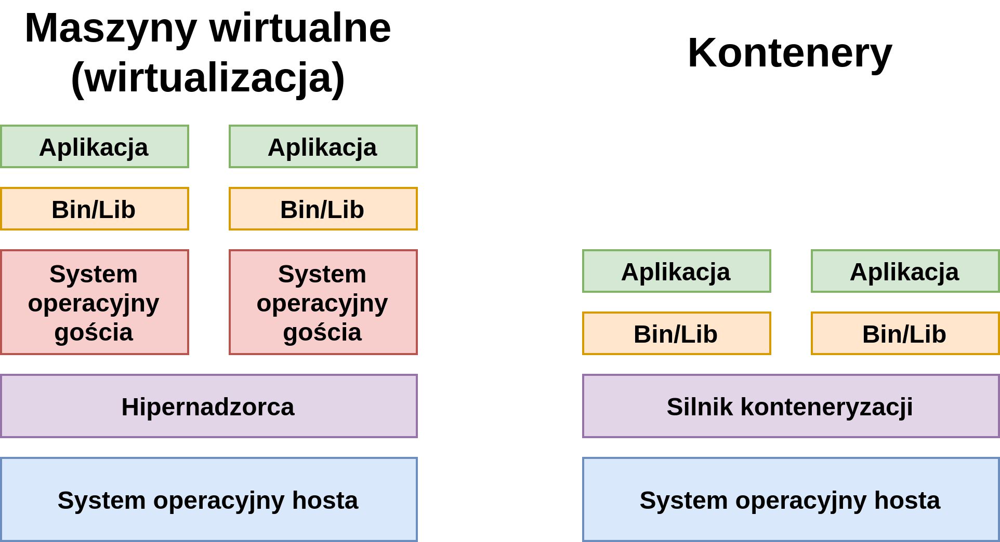

L1: Przygotowanie środowiska¶
Efekty kształcenia laboratorium¶
poznasz możliwości tworzenia środowiska wirtualnego Python
poznasz środowisko Jupyter
poznasz podstawowe mechanizmy systemu kontroli wersji Git i ekosystemu GitHub
Wymagania wstępne¶
Python¶
Podczas zajęć pracować będziemy używając języka Python. Na zajęciach nie będziemy wprowadzać podstaw tego języka.
See also
W razie potrzeby instalacji Pythona, odsyłamy do dokumentacji, gdzie znajdują się instrukcje krok po kroku odnośnie instalacji w różnych systemach.
See also
W celu odświeżenia podstaw języka (składnia, zmienne, pętle itd) odsyłamy np. do tego kursu.
Git¶
Laboratoria prowadzić będziemy przy pomocy GitHub Classroom, bazującym na repozytoriach Git. Potrzebne będą jedynie podstawowe funkcjonalności - klonowanie repozytorium, commitowanie i pushowanie do niego.
See also
W razie potrzeby instalacji Gita, odsyłamy do dokumentacji, gdzie znajdują się instrukcje krok po kroku odnośnie instalacji w różnych systemach.
GitHub Classroom¶
Zajęcia przeprowadzone zostaną częściowo przy pomocy narzędzia GitHub Classroom, które pozwala na łatwe zarządzanie zadaniami grupy studentów, a częściowo z wykorzystaniem standardowych repozytoriów zakładanych przez prowadzącego.
Część laboratoriów zostanie opublikowane w formie Assignmentu, do którego każdorazowo zostaniecie zaproszeni poprzez rozesłanie linka przez prowadzącego. Po zaakceptowaniu Assignmentu, sklonowane zostanie repozytorium zawierajace pliki przygotowane przez prowadzącego. Zadaniem studenta jest rozwiązanie zamieszczonych zadań i commit zmienionych plików z powrotem do repozytorium.
Pozostałe laboratoria będą odbywały się w jednym standardowym repozytorium do którego zostaniecie zaproszeni. Po wykonaniu każdego z etapów wymagane będzie utworzenie Pull Reqest’a do brancha main. Studenci nie będą mogli samodzielnie modyfikować brancha main, ma to umożliwić prowadzącemu czytelny przegląd wprowadzonych zmian przy danej liście zadań.
Po upływie terminu oddawania zadań (tydzień od zajęć na których zostały one opublikowane) prowadzący sprawdza repozytoria, przegląda kod i weryfikuje umieszczone rozwiązania. W przypadku standardowego repozytorium wykonuje operację merge.
See also
Więcej informacji wraz z dokładnymi instrukcjami korzystania z Classroom - tutaj (należy jednakże pominąć część dotyczącą instalacji i użytkowania RStudio).
Środowiska wirtualne¶
W celu izolacji środowiska Pythona na potrzeby konkretnego projektu stosuje się środowiska wirtualne. Umożliwiają one instalację bibliotek w izolacji od głównego systemu - dzięki czemu można stosować np. różne wersje jednej biblioteki w różnych projektach.
Najpopularniejsze z nich to venv, pipenv i conda. Używanie środowisk wirtualnych jest dobrą praktyką programistyczną umożliwiająca izolację środowisk. Nie narzucamy wyboru konkretnego rozwiązania - choć różnią się między sobą, wszystkie spełniają założenia wirtualizacji.
Venv¶
Najprostsze z rozwiązań. Tworzy wirtualne środowisko - i to jedyne co robi.
W celu stworzenia nowego środowiska należy wykonać w terminalu następujące komendy:
cd DIRECTORY
python3 -m venv .
Tak stworzone środowisko należy każdorazowo aktywować po zmianie sesji terminala:
# na Linuxie
source bin/activate
# na Windowsie
\Scripts\activate.bat
Środowisko wyłączamy przy pomocy:
deactivate
Pipenv¶
Działa analogicznie do venva, jednak jest bardziej zaawansowane w kwestii zarządzania zależnościami instalowanych paczek. Automatycznie zapisuje instalowane biblioteki do pliku Pipfile, który może służyc łatwej reprodukcji całego środowiska
Po zainstalowaniu przy pomocy
pip install pipenv
stworzenie środowiska jest równie proste co przy venvie:
cd DIRECTORY
pipenv install
Środowisko aktywujemy przy pomocy:
pipenv shell
Środowisko wyłączamy przy pomocy:
deactivate
Conda¶
Jest to środowisko wirtualne korzystające z Anacondy, zawierającej dystrybucję Pythona sprofilowaną pod zastosowania naukowe. Anaconda zawiera preinstalowaną i zoptymalizowaną gamę paczek, osobny menager paczek i GUI.
Anaconda bywa częstym wyborem w przypadku używania Windowsa - standardowa instalacja części paczek często jest problematyczna, podczas gdy te wbudowane w Anacondę zazwyczaj nie sprawiają problemów.
W celu instalacji odsyłamy do dokumentacji.
Stworzenie środowiska jest równie proste:
conda create --name ENVIRONMENT_NAME
Możemy też podczas tworzenia środowiska wybrać konkretną wersję Pythona:
conda create --name ENVIRONMENT_NAME python=3.9
Aktywacja natomast polega na wywołaniu:
conda activate ENVIRONMENT_NAME
Instalacja paczek (choć możliwa także przy użyciu pip) przebiega przy pomocy:
conda install --name ENVIRONMENT_NAME paczka==wersja
Środowisko wyłączamy przy pomocy:
deactivate
Hint
Conda nie jest mechanizmem stricte Pythonowym - tak samo można używać środowisk wirtualnych dla innych jezyków
Docker¶
Do wirtualizacji środowiska można użyć kontenerów. Jednym z najpopularniejszych narzędzi do tworzenia i zarządzania kontenerami jest Docker. Więcej o nim dowiecie się na ostatnich zajęciach. Teraz powiemy sobie jak wykorzystać go do wirtualizacji środowiska.
Definicja aplikacji i zależności nazywana jest obrazem (ang. image). Na podstawie obrazu, Docker tworzy kontener (ang. container) który zawiera i w którym jest uruchomiona aplikacja.
Kontenery a maszyny wirtualne¶
Środowiska uruchomieniowe dla aplikacji można tworzyć na wiele sposobów. Wiemy, że można używać do tego celu kontenerów, ale równie popularnym podejściem, było do niedawna, użycie maszyn wirtualnych. Który ze sposobów powinniśmy wybrać? Jakie są zalety i wady tych podejść?
Maszyny wirtualne
W systemie operacyjnym hosta uruchomiony jest hipernadzorca, który jest odpowiedzialny za wirtualizację, czyli m.in. tłumaczenie instrukcji maszynowych maszyn wirtualnych na polecenia dla systemu hosta, a zatem i dla procesora, przetłumaczanie wywołań systemowych (ang. system calls) oraz alokację zasobów. Następnym poziomem są systemy operacyjne gościa, które są uruchomione w ramach hipernadzorcy. Systemy gościa dostarczają potrzebnych bibliotek i plików uruchomieniowych (Bin/Lib) dla uruchomionych aplikacji.
Kontenery
Zamiast hipernadzorcy występuje tutaj silnik kontenerezacji, który wykorzystuje odpowiednie mechanizmy systemu operacyjnego hosta (więcej o tym poniżej), aby bezpośrednio uruchamiać aplikacje i dostarczać im potrzebnych bibliotek i plików uruchomieniowych.
Wizualne porównanie tych podejść znajduje się na poniższym obrazku:

Jak widać maszyny wirtualne dostarczają większej izolacji od systemu operacyjnego hosta. Wiąże się to jednak z większym kosztem i zazwyczaj wolniejszym środowiskiem – głównie ze względu na potrzebę tłumaczenia instrukcji maszynowych i wywołań systemowych. Kontenery są narzędziem o mniejszym stopniu skomplikowania, pozwalającymi szybciej uruchamiać aplikacje i wymagają mniej zasobów (np. poprzez brak potrzeby uruchamiania systemu operacyjnego gościa).
Instalacja¶
Należy zainstalować paczkę odpowiednią dla swojego systemu operacyjnego.
Po udanej instalacji warto zweryfikować, czy wszystko przebiegło pomyślnie, odpalając w terminalu:
$ docker run hello-world
Hello from Docker!
This message shows that your installation appears to be working correctly.
To generate this message, Docker took the following steps:
1. The Docker client contacted the Docker daemon.
2. The Docker daemon pulled the "hello-world" image from the Docker Hub.
(amd64)
3. The Docker daemon created a new container from that image which runs the
executable that produces the output you are currently reading.
4. The Docker daemon streamed that output to the Docker client, which sent it
to your terminal.
Tworzenie przykładowego środowiska¶
W pliku requirements.txt wyspecyfikuj paczki, a w głównym folderze projektu utwórz plik Dockerfile o następującej treści:
FROM python:3.10
ARG UID
ARG GID
WORKDIR /app
RUN groupadd --gid $GID myuser && useradd --no-create-home -u $UID --gid $GID myuser && chown -R myuser /app
COPY requirements.txt .
RUN pip --no-cache-dir install -r requirements.txt
USER myuser
następnie zbuduj obraz dockerowy komendą (warto dodać nieobowiązkowy tag dla późniejszej prostszej identyfikacji):
docker build --build-arg UID=$(id -u) --build-arg GID=$(id -g) --tag pdiow-python .
--build-arg UID=$(id -u) --build-arg GID=$(id -g) przekazujemy argumenty, które zapewnią, że utworzony w obrazie użytkownik będzie miał to samo ID użytkownika i ID grupy co użytkownik host’a.
Hint
Tworzenie nowego użytkownika w obrazie nie jest wymagane (ani technicznie, ani w ramach kursu). Gdy nie dodamy użytkownika, będziemy uruchamiać skrypt jako root, co jest naruszeniem zasad bezpieczeństwa. W związku z tym dobrą praktyką jest korzystanie z użytkownika niebędącego root’em. Więcej o dobrych praktykach przy korzystaniu z Dockera tutaj.
w celu uruchomienia skryptu wpisujemy:
docker run --user "$(id -u):$(id -g)" --rm -v $(pwd):/app pdiow-python python SCIEZKA_DO_SKRYPTU
--user "$(id -u):$(id -g)" uruchamia kontener z id usera hosta. W przypadku gdyby skrypt zapisywał dane właścicielami będzie user a nie root. Przydatne na serwerach, gdzie nie mamy dostępu do root’a. (niewymagane, uwaga: działanie na systemach innych niż Linux może się różnić!)
--rm automatyczne usuwa kontener po jego zamknięciu (niewymagane).
-v $(pwd):/app pozwala podmontować bieżący folder jako wolumen w kontenerze, umożliwia to ograniczenie kopiowania plików do obrazu oraz umożliwia modyfikacje zewnętrznych plików przez kontener np. skrypt może zapisać plik, który zobaczymy w plikach naszego projektu. Dodatkowo nie będzie konieczne, aby budować obraz przy każdej modyfikacji plików projektu. Ponowne budowanie będzie konieczne jedynie po modyfikacji pliku requirements.txt.
Hint
Conda nie jest mechanizmem stricte Pythonowym - tak samo można używać środowisk wirtualnych dla innych jezyków
Jupyter Notebook¶
Część laboratoriów przygotowane zostało w formie notebooków Jupytera. Jest to proste przeglądarkowe IDE Pythona, które w prosty sposób umożliwia eksperymentowanie i ewaluację kodu.
W celu instalacji wykonujemy (uprzednio oczywiście aktywowawszy środowisko wirtualne):
pip install jupyter
Teraz uruchamiamy notebook przy pomocy:
jupyter notebook
See also
W celu pogłębienia wiedzy o interfejsie i możliwościach Jupyter Notebooka - zachęcamy do lektury np. tego artykułu
JupyterLab¶
JupyterLab to kolejna generacja znanego IDE posiadająca bardziej rozbudowany interfejs.
Hint
Możliwe jest zainstalowanie używanie jednego Jupyter Notebook/JupyterLab z wieloma środowiskami - dokumentacja.
PyCharm¶
PyCharm to popularne IDE dla języka Python, które umożliwia łatwe i szybkie tworzenie aplikacji. Oferuje wsparcie dla języka Python i popularnych bibliotek, udostępnia narzędzia do debugowania i testowania oraz współpracuje z systemami wersji kontrolnych. Integracja z narzędziami takimi jak Docker, Conda, DVC, Jupyter umożliwiają szybszą i bardziej efektywną pracę programisty.
Hint
Do celów edukacyjnych studenci mogą korzystać z PyCharm Professional Edition, która m.in. pozwala na integrację z Docker’em. Dowiedz się więcej.
Jakość kodu¶
Formatowanie kodu za pomocą narzędzi zewnętrznych jest ważne, ponieważ poprawia jego czytelność, zmniejsza ryzyko błędów i umożliwia łatwiejszą współpracę w zespole.
black¶
Paczka formatująca kod Pythonowy, instalujemy za pomocą:
pip install black
następnie formatujemy wszystkie pliki w projekcie:
black .
Inne narzędzia¶
Analiza wszystkich narzędzi dbających o jakość kodu nie jest celem tego kursu, jednakże rekomendujemy przyjrzenie się takim projektom jak isort, mypy, pytest i wiele innych oraz rozważenie wprowadzenia ich do codziennej pracy.